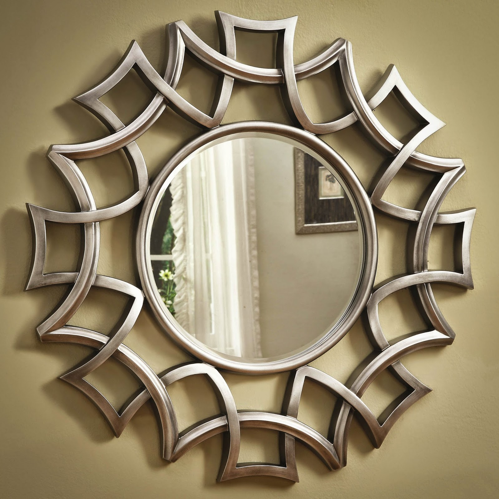

Kian berkembangnya kemajuan zaman, menciptakan banyak bahan atau material komplementer yang dapat mempercantik hunian atau tempat usaha anda. Banyak material pensupport yang dapat digunakan seperti kaca, parket lantai kayu dan masih banyak lagi. Tak hanya memperindah, tetapi material pelangkap hal yang demikian dapat memberi garansi keamanan pada penghuni di dalamnya. Kita kerap menemui material-material hal yang demikian pada gedung, kantor, industry pun rumah hunian.
Sekarang sudah hadir berjenis-jenis maca macam kaca yang bisa dijumpai, tiap-tiap kaca mempunyai fungsinya masing-masing. Dapat untuk system keamanan, estetika dan masih banyak yang dapat di dapatkan dari pemasangan kaca. Jenis kaca-kaca hal yang demikian diantaranya yaitu kaca tempered, kanopi kaca, kaca frameless, kaca cermin, railing kaca dan masih banyak tipe kaca lainnya yang bisa anda dapatakan dan anda aplikasikan pada bangunan. Tak hanya material kaca kini juga terdapat material kayu atau parket lantai kayu jati. Berikut ini sedikit penjelasan mengenai beragam tipe kaca dan fungsi kaca dan juga parket lantai kayu jati yang dapat anda temukan.
Jasa Maintenance Kaca Tebingtinggi
Jasa maintenance kaca Tebingtinggi menawarkan pelayanan perawatan bahan bangunan yang terbuat dari kaca. Salah satunya pelayanan berupa pembersihan gedung yang terbuat dari kaca. Peralatan variasi kotoran seperti debu serta sinar matahari dan juga hujan acap kali membuat kaca gedung menjadi kusan dan tidak menarik. Membersihkan bagian kaca gedung Anda yang mungkin rusak, pecah, atau mengalami situasi sulit lainnya.
Dis.or.id menyiapkan semua variasi kaca pantas kebutuhan saat ini.
Tidak anda sedang memerlukan maintenance kaca Tebingtinggi Tebingtinggi, anda bisa segera mengunjungi dis.or.id. Dengan daya pakar yang siap untuk melaksanakan pembersihan dan bahan pembersih yang di miliki, kaca gedung perkantoran Anda akan terlihat seperti baru lagi. Oleh sebab itu, dis.or.id cuma memilih orang-orang yang betul-betul profesional dan sudah mempunyai pengalaman dalam hal maintenance kaca Tebingtinggi . Dengan sudah memberikan training kepada energi ahli sehingga mereka sudah dapat menjalankan profesi mereka dengan amat baik. Kecuali cuma dalam hal membersihkan kaca, mereka juga kapabel menjalankan koreksi serta penggantian kaca yang mengalami kerusakan.
Info Pemesanan Selengkapnya
Google Maps: https://www.google.com/maps/d/u/0/viewer?mid=1p_FromQbeWpcNOhOEjbFkVYqH9Hbcdtt&ll=-7.27380280025364%2C112.65243155000007&z=18
Note: https://www.facebook.com/notes/distributor-of-industrial-supply/kontraktor-jasa-maintenance-kaca-gedung-rusak-pecah-kusam-dlsb/1785712251728654/
Event: https://www.facebook.com/events/1976326045988519/
Portfolio Produk: https://www.facebook.com/1681607345472479/photos/?tab=album&album_id=1712630562370157
Distributor & Supplier Kaca Shower

Semua orang pasti mau punya kamar mandi yang kondisinya selalu bersih sehingga bisa terasa lebih nyaman dikala digunakan. Salah satu metode yang bisa dipakai untuk menciptakan kamar mandi yang senantiasa bersih yakni memakai shower sebab cara pembersihannya memang jauh lebih praktis dibanding dengan yang menerapkan konsep bak mandi. Tidak mau lebih total lagi, kamar mandi yang mengaplikasikan shower ini dapat dilengkapi dengan bagian lain yakni shower screen atau dapat disebut dengan kaca shower. Shower screen yaitu kotak atau alat yang berfungsi sebagai penyekat ruang khusus untuk kamar mandi. Kita tidak perlu repot lagi mencari tukang sendiri sebab pemasangan alat sekat ini memang membutuhkan teknik tersendiri.
Tak anda sedang mencari kaca shower untuk kamar mandi, anda bisa lantas mengunjungi dis.or.id. Tak terbaik dan harga relatif murah. Anda dapat buktikan sendiri.
Distributor, Supplier & Jasa Pasang Kanopi Kaca

Salah satu variasi kanopi kaca yang bisa anda aplikasikan pada atap yakni atap kaca skylight yang adalah kanopi kaca dalam format jendela horizontal atau kubah yang umumnya ditempatkan di atap bangunan yang memiliki maksud untuk pencahayaan ruangan. Anda bisa memilih kanopi kaca yang cocok dengan kebutuhan dan kemauan anda. Atap kaca skylight ditujukkan untuk menerima sinar natural UV yang memiliki fungsi sebagai penerangan dalam sebuah ruang. Disinilah letak perbedaan optis yang utama antara akrilik (acrylic) dengan kaca. {Bila tembus pandang, kaca mengabsorpsi sinar yang masuk sehingga semakin tebal kaca karenanya semakin sedikit cahaya yang dapat melaluinya, maka sifat transparannya makin berkurang.|Di samping pintu kaca shower akan membikin kamar mandi kecil nampak lebih besar. Pada atap akrilik, perembesan sinar yang terjadi demikian kecil sehingga padahal ketebalannya bertambah, sifat transparannya tak banyak berubah. Atap akrilik atau bisa juga disebut atap kaca acrylic ini banyak ditemukan di sebuah bangunan rumah, seperti ruko, apartemen, resto, mall, hingga bangunan gedung.
Seiring dengan perkembangan dunia properti, kini kanopi kaca tempered telah berkembang pesat meniru arsitektur modern. Ini nampak dari bahan material yang di gunakan dalam pembuatan kanopi kaca. Bila itu, kanopi juga dapat melindungi kendaraan beroda empat dan kendaraan lain anda. Sekiranya fungsi utama kanopi sebagai pelindung untuk bangunan tersebut, pemasangan kanopi kaca juga dapat membuat bangunan menjadi nampak lebih menawan dan menarik, apalagi menerapkan konsep yang sama dengan konsep rumah minimalis. Disana anda akan mendapatkan kanopi kaca yang layak dengan bermacam-macam ketebalan dan harga yang cukup relatif murah.
Jasa Pemasangan Kaca Tempered
Jasa pemasangan kaca tempered menawarkan solusi bagi Anda mempunyai budget yang terbatas tetapi mau mempunyai properti, entah itu gedung perkantoran, warung, atau rumah hunian yang menggunakan kaca tempered. Kecuali hanya menjalankan pemasangan kaca tempered untuk gedung perkantoran, namun juga untuk rumah hunian. Dis.or.id mempunyai segala daya spesialis yang di rekrut hanya mereka yang profesional yang tahu persis bagaimana metode mengaplikasikan alat dan bagaimana membersihkan kaca gedung bertingkat. Maka dari itu, mereka sudah mulai menyukai variasi kaca yang satu ini. Untuk gedung perkantoran, bagian yang paling kerap dihasilkan dengan bahan yang satu ini ialah jendela dan pintu.
Sementara itu, untuk hunian, kanopi dan kamar mandi menjadi bagian yang paling menarik jikalau diciptakan dari bahan kaca tempered. Kini dari kaca tempered dapat mengurangi bahaya cedera ketika kaca pecah karena saat terjadi sesuatu seperti kaca pecah maka kaca tempered akan terurai menjadi butiran kecil yang relatif lebih aman dari potongan pecahan kaca umum. Bukan sembarang alat yang diaplikasikan untuk memotong kaca tempered sesuai dengan keperluan. Tak saat ini anda sedang berharap membangun suatu bangunan atau gedung, anda bisa memanfaatkan kaca tempered untuk digunakan segera ke segala ragam bidang.
Distributor & Supplier Pintu Kaca
Pelaksanaan ini banyak model pintu seperti cocok dengan ada di bayang-bayang Anda. Ada banyak desain pintu kaca yang dapat kita temui seperti pintu kaca berbentuk sliding (geser) atau folding (lipat). Tak Anda suka dengan pintu kaca dengan pigura, Anda dapat pilih apakah frame hal yang demikian terbuat dari bahan kayu atau aluminium. Tenaga jenis kaca yang bisa Anda pilih untuk pintu kaca Anda seperti kaca tempered yang sedang booming atau kaca non-tempered yang harganya lebih terjangkau. Desain tersebut bisa disesuaikan dengan konsep properti Anda. Anda tinggal tentukan saja contoh pintu kaca seperti apa yang ingin Anda miliki. Sekarang paling banyak diminati saat ini adalah kaca tempered sebab jauh lebih kuat dan tahan lama.
Dis.or id siap menolong anda untuk membuatkan pintu kaca idaman anda. Jikalau pakar yang amat profesional sehingga benar-benar siap untuk mewujudkan pintu kaca seperti apa yang berharap Anda miliki.
Kaca yang di gunakan yaitu kaca dengan kwalitas terbaik. Untuk budget yang lebih sedikit, Anda bisa memilih jenis kaca non-tempered.
Jual Kaca Cermin

Kaca cermin dilapisi dengan pelapis transparan tipis dan oksida logam sebagai lapisan pelapis. Ada banyak sekali desain cermin yang dapat Anda pilih. Kini, cermin tak hanya berbentuk persegi atau persegi panjang saja. Jadi, cuma terlihat transparan dari satu sisi saja. Kini perlu diamati juga yaitu apakah Anda mau memiliki kaca cermin desain minimalis atau yang elegan. Cermin minimalis memiliki siku. Seandainya itu, terkadang cerminnya tak ada bingkainya atau yang sering disebut dengan kaca cermin frameless.
Anda juga bisa tentukan apakah berharap memiliki cermin yang memiliki frame atau tak. Pun, Anda bisa pakai kaca cermin ini sekalian sebagai material utama, seperti sebagai pintu lemari di kamar tidur Anda. Atau Anda bisa memilih cermin yang dibangkai dengan bermacam macam bahan seperti kayu, aluminum, plastik, dan bahan lainnya. Anda bisa menambahkan bingkai atau tanpa bingkai sesuai dengan kesukaan Anda. Tersedia kaca cermin dengan bermacam ukuran yang bisa anda pesan di dis.or.id. Harga yang terjangkau dan kwalitas terbaik ialah ciri khas dari dis.or.id. Dis.or.id menyediakan kaca cermin yang bisa anda beli dengan harga yang betul-betul murah dan dengan kwalitas terbaik. Disana anda dapat mendapatkan kaca cermin yang pantas dengan kemauan anda.
Jasa Pemasangan Railing Kaca

Railing kaca menjadi salah satu komponen yang akan membuat kelihatan sangat minimalis. Mungkin hal ini disebabkan semakin banyak pemilik rumah yang mau menampakkan sebuah desain interior rumah yang benar-benar minimalis. Kecuali ini disebabkan kian banyak permintaan kepada railing ini. Malahan aksesoris seperti pada pegangan tangga malah tidak terbuat dari bahan kayu lagi namun kaca dan aluminum. Tapi, Anda wajib pastikan railing kaca berkualitas terbaik. Tak kaca ini pecah, pecahannya halus sehingga tidak akan melukai orang. Malahan juga bahan yang dipakai.
Ada banyak alternatif jenis kaca yang bisa diaplikasikan. Anda bisa pertimbangkan untuk menerapkan kaca tempered. Kaca ini amat kuat dan juga aman. Sekiranya juga dengan railing. Sekarang pasti, railing kaca ini menjadi pilihan yang pas. Kalau memberikan kesan minimalis pada interior rumah, ini juga membuat rumah Anda menonjol lebih nyaman untuk diwujudkan daerah tinggal.
Kini dis.or.id sudah menyediakan railing kaca berkulitas dan bermutu. Harga yang amat ekonomis serta kualitas terbaik yang sudah terjamin membikin anda tak akan menyesal membeli railing kaca di dis.or.id.
Distributor & Supplier Pintu Lipat Kaca
Karena keunggulan yang dimiliki tersebut, Anda pasti berpikir harga pintu kaca lipat frameless ini mahal. Pintu lipat kaca diterapkan saat ruangan diaplikasikan untuk hal yang privacy. Anda bisa mencari teladan pintu lipat kaca tempered minimalis lainnya. Sekarang pasti, modelnya banyak layak dengan yang Anda butuhkan.
Banyak hal yang sudah Anda ketahui tentang pintu kaca lipat tempered. Banyak pertimbangan yang membuat Anda pasti yakin untuk memilih kaca tempered daripada ragam kaca yang lainnya. Dan yang pasti, ruangan menjadi lebih modern, minimalis, dan nyaman untuk ditempati. Hinges yakni aksesoris yang penting karena hinges inilah yang menopang berat pintu kaca Anda.
Jasa Pemasangan Kubikel Toilet

Kubikel kaca banyak dijumpai di pelbagai tempat besar seperti perkantoran, gedung, bahnkan sekarang juga bisa di pakai untuk hunian rumah. Kubikel toilet yaitu kaca pembatas yang dipakai pada toilet.
Rumah sakit dan perkantoran. Banyak keuntungan yang dapat di dapatkan dengan menggunakan kubikel WC diantaranya adala efisiensi, dimana dalam satu ruangan bisa menampung dan membuat banyak kamar mandi. Jika anda sedang memerlukan kubikel toilet, anda dapat lantas mengunjungi laman dis.or.id. Toilet kubikel juga memberikan hal yang efisien dan tepat sasaran dalam pembagian space kamar mandi yang kecil.
Harga yang ditawarkan malah cukup relatif murah.
Namun pengaplikasian kaca di kamar mandi dapat jadi situasi sulit dikala Anda meletakkannya dengan salah. Justru embun dapat merekat di kaca dan lambat laun bisa membikin kaca tidak sejernih semula.
Distributor & Supplier Partisi Kaca
Biaya ini tentu bukan tanpa alasan. Yang pertama, tarif pembuatan dan pemasangan partisi kaca jauh lebih murah dibandingi dengan partisi yang terbuat dari batu bata. Selain itu, juga memakan waktu sehingga Anda menghembat tarif pemasangan. Alasan yang kedua, partisi kaca ini ruangan menonjol minimalis. Ini sesuai dengan konsep atau desain properti dikala ini. Belum lagi untuk tukang yang dapat lebih banyak daripada biaya pembelian bahan bangunan. Lain jika Anda memilih partisi kaca. Bahan ini lebih murah dan gampang dalam pemasangan. Pun ruangan disekat dengan partisi ini seperti kamar mandi dalam dan taman dalam ruangan. Anda menggunakan partisi kaca ini sebagai penyekat sebagian ruangan seperti kamar mandi dalam, taman dalam ruangan, ruangan bermain di dalam rumah, dan lain sebagainya. itu, contoh partisi kaca ada yang frameless (tanpa pigura) dan juga ada yang frame. anda kesulitan untuk memasang dinding kaca penyekat, dis.or.id menyediakan jasa pemasangan dinding kaca penyekat untuk kamar mandi rumah anda.